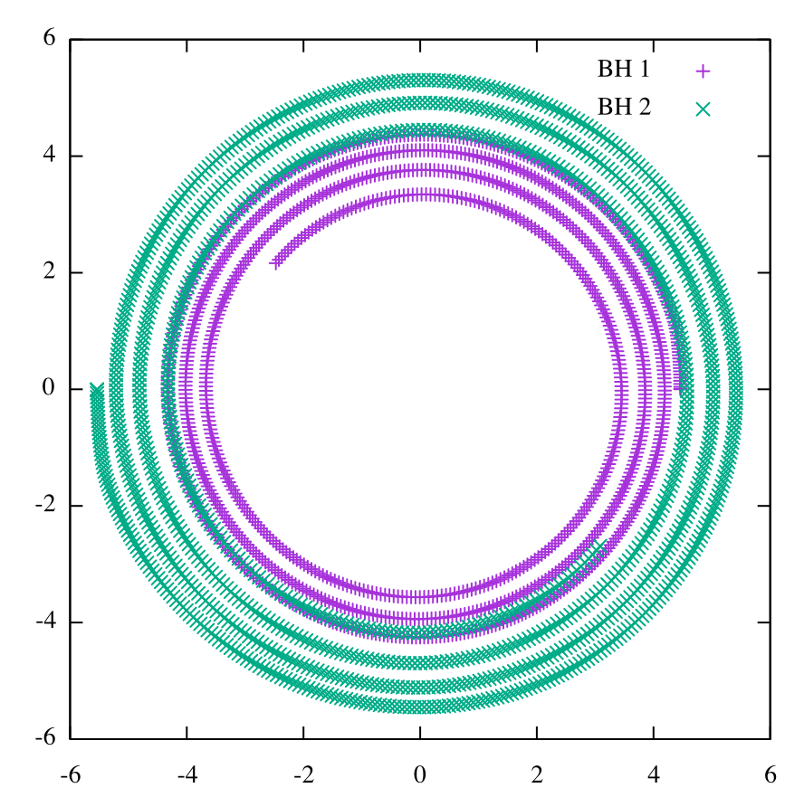

If you don't already have the Einstein Toolkit downloaded, you can download it as described here. You can use the current release version.
Download the parameter file:
cd Cactus curl -Lf http://einsteintoolkit.org/gallery/bbh/GW150914.rpar -o par/GW150914.rparIf you already have the Einstein Toolkit downloaded, configured and built, you can skip to Run.
Configure SimFactory for your machine:
simfactory/bin/sim setupHit enter for each question if the default is OK. If you intend to run on a cluster that requires an allocation, make sure to configure this during setup.
Compile Cactus:
simfactory/bin/sim build --thornlist manifest/einsteintoolkit.th
Note that the simulation requires about 82 GB of RAM, so most likely you will need to use a cluster. Submit the simulation:
simfactory/bin/sim create-submit GW150914_28 --define N 28 --parfile par/GW150914.rpar --procs 128 --walltime 24:00:00
You can choose a different number of cores than 128; if it is too small, the simulation will run out of memory.
When the simulation starts running, it will write its output data into GW150914_28 in your simulations directory. You can find the directory containing the output with:
simfactory/bin/sim get-output-dir GW150914_28
You can see the status of the simulation with
simfactory/bin/sim list-simulations GW150914_28
for example
GW150914_28 [ACTIVE (RUNNING), restart 0000, job id 363502]
It will say FINISHED when the simulation has finished. You can check the output while it is still running.
You can see the console output of the simulation in
/path/to/GW150914_28/output-0000/GW150914_28.out
for example:
Simulation name: GW150914_28
Running simulation GW150914_28
10
1 0101 ************************
01 1010 10 The Cactus Code V4.3.0
1010 1101 011 www.cactuscode.org
1001 100101 ************************
00010101
100011 (c) Copyright The Authors
0100 GNU Licensed. No Warranty
0101
--------------------------------------------------------------------------------
Cactus version: 4.3.0
...
----------------------------------------------------------------------------------------------------------
Iteration Time | *me_per_hour | ML_BSSN::phi | *TISTICS::maxrss_mb | *TICS::swap_used_mb
| | minimum maximum | minimum maximum | minimum maximum
----------------------------------------------------------------------------------------------------------
0 0.000 | 0.0000000 | 0.0005741 0.9995490 | 2580 3510 | 0 0
4 0.009 | 3.0212222 | 0.0005853 0.9995490 | 2781 3811 | 0 0
8 0.017 | 5.5436288 | 0.0005960 0.9995490 | 2781 3811 | 0 0
12 0.026 | 7.4708510 | 0.0006063 0.9995490 | 2781 3811 | 0 0
16 0.034 | 9.2093008 | 0.0006161 0.9995490 | 2781 3811 | 0 0
...
You can do a quick-and-dirty visualisation of the coordinate tracks of the black holes with gnuplot:
cd /path/to/GW150914_28/output-0000/GW150914_28 gnuplot set size square 0.75,0.75 set key plot 'puncturetracker-pt_loc..asc' u 23:33 title "BH 1", 'puncturetracker-pt_loc..asc' u 24:34 title "BH 2"